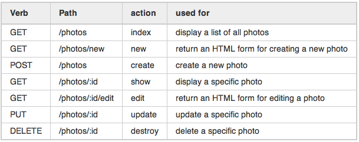

<!DOCTYPE html>
<html lang="en">
  <head>
    <meta charset="utf-8" />
    <meta name="viewport" content="width=device-width, initial-scale=1.0, maximum-scale=1.0, user-scalable=no" />

    <title></title>
    <link rel="stylesheet" href="dist/reveal.css" />
    <link rel="stylesheet" href="dist/theme/beige.css" id="theme" />
    <link rel="stylesheet" href="plugin/highlight/zenburn.css" />
	<link rel="stylesheet" href="css/layout.css" />
	<link rel="stylesheet" href="plugin/customcontrols/style.css">
	<link rel="stylesheet" href="plugin/chalkboard/style.css">


    <script defer src="dist/fontawesome/all.min.js"></script>

	<script type="text/javascript">
		var forgetPop = true;
		function onPopState(event) {
			if(forgetPop){
				forgetPop = false;
			} else {
				parent.postMessage(event.target.location.href, "app://obsidian.md");
			}
        }
		window.onpopstate = onPopState;
		window.onmessage = event => {
			if(event.data == "reload"){
				window.document.location.reload();
			}
			forgetPop = true;
		}

		function fitElements(){
			const itemsToFit = document.getElementsByClassName('fitText');
			for (const item in itemsToFit) {
				if (Object.hasOwnProperty.call(itemsToFit, item)) {
					var element = itemsToFit[item];
					fitElement(element,1, 1000);
					element.classList.remove('fitText');
				}
			}
		}

		function fitElement(element, start, end){

			let size = (end + start) / 2;
			element.style.fontSize = `${size}px`;

			if(Math.abs(start - end) < 1){
				while(element.scrollHeight > element.offsetHeight){
					size--;
					element.style.fontSize = `${size}px`;
				}
				return;
			}

			if(element.scrollHeight > element.offsetHeight){
				fitElement(element, start, size);
			} else {
				fitElement(element, size, end);
			}		
		}


		document.onreadystatechange = () => {
			fitElements();
			if (document.readyState === 'complete') {
				if (window.location.href.indexOf("?export") != -1){
					parent.postMessage(event.target.location.href, "app://obsidian.md");
				}
				if (window.location.href.indexOf("print-pdf") != -1){
					let stateCheck = setInterval(() => {
						clearInterval(stateCheck);
						window.print();
					}, 250);
				}
			}
	};


        </script>
  </head>
  <body>
    <div class="reveal">
      <div class="slides"><section  data-markdown><script type="text/template"><!-- .slide: class="drop" data-background-image="../Adjuntos/slides.eap.portada.png" -->
<div class="" style="position: absolute; left: 0px; top: 0px; height: 700px; width: 960px; min-height: 700px; display: flex; flex-direction: column; align-items: center; justify-content: center" absolute="true">

# Springboot
</div>

<aside class="notes"><p>que es springboot, desarrollo de APIs</p>
</aside></script></section><section  data-markdown><script type="text/template"><!-- .slide: class="drop" data-background-image="../Adjuntos/slides.eap.png" -->
<div class="" style="position: absolute; left: 0px; top: 0px; height: 700px; width: 960px; min-height: 700px; display: flex; flex-direction: column; align-items: center; justify-content: center" absolute="true">

# Framework JAVA
</div></script></section><section  data-markdown><script type="text/template"><!-- .slide: class="drop" -->
<div class="" style="position: absolute; left: 0px; top: 0px; height: 700px; width: 960px; min-height: 700px; display: flex; flex-direction: column; align-items: center; justify-content: center" absolute="true">

# Framework
</div>

<aside class="notes"><p>podemos pensar como los andamios alrededor de una casa en obras o las vias del tren.</p>
<p>Una serie de elementos que facilitan el trabajo</p>
<!-- .slide: data-background-image="../Adjuntos/slides.eap.png" --></aside></script></section><section  data-markdown><script type="text/template"><!-- .slide: class="drop" -->
<div class="" style="position: absolute; left: 0px; top: 0px; height: 700px; width: 960px; min-height: 700px; display: flex; flex-direction: column; align-items: center; justify-content: center" absolute="true">

## Springboot
# Aplicación Independiente
</div>

<aside class="notes"><p>Todo lo que necesita la aplicación para desarrollar y ejecutarse está en el repositorio de la aplicación. No tienes que instalar cosas, configurar cosas más allá de Java</p>
<p>Algunas características de una aplicación independiente incluyen:</p>
<ol>
<li><p><strong>No requiere instalaciones externas:</strong> Una aplicación independiente generalmente se presenta en un paquete que incluye todo lo necesario para su ejecución. No necesita que se instalen bibliotecas, entornos de ejecución o software adicional.</p>
</li>
<li><p><strong>Autosuficiente:</strong> Puede ejecutarse por sí misma sin depender de servicios externos. Esto significa que no necesita estar conectada a Internet ni depender de otros sistemas para realizar sus funciones principales.</p>
</li>
<li><p><strong>Portabilidad:</strong> Por lo general, una aplicación independiente es fácilmente transferible entre diferentes sistemas o entornos, ya que lleva consigo todas las dependencias necesarias.</p>
</li>
<li><p><strong>Fácil de distribuir:</strong> Al ser independiente, la distribución de la aplicación se simplifica. Puedes proporcionar a los usuarios un único archivo o conjunto de archivos para instalar y ejecutar la aplicación.</p>
</li>
</ol>
<!-- .slide: data-background-image="../Adjuntos/slides.eap.png" --></aside></script></section><section  data-markdown><script type="text/template"><!-- .slide: class="drop" -->
<div class="" style="position: absolute; left: 0px; top: 0px; height: 700px; width: 960px; min-height: 700px; display: flex; flex-direction: column; align-items: center; justify-content: center" absolute="true">

## Springboot
# Servidor
</div>

<aside class="notes"><p>no necesitas ninguna dependencia para arrancar la aplicación</p>
<!-- .slide: data-background-image="../Adjuntos/slides.eap.png" --></aside></script></section><section  data-markdown><script type="text/template"><!-- .slide: class="drop" -->
<div class="" style="position: absolute; left: 0px; top: 0px; height: 700px; width: 960px; min-height: 700px; display: flex; flex-direction: column; align-items: center; justify-content: center" absolute="true">

## Springboot
# Auto Configuración
</div>

<aside class="notes"><p>incluso en librerías de terceros el objetivo de Springboot es que empezar a usar otras herramientas tenga el mínimo rozamiento posible. Si añadimos h2 inmediatamente tenemos la base de datos en memoria, con usuario pass y la consola en navegador.</p>
<p>Eliminado por no tenerlo claro</p>
<h2 id="springboot">Springboot</h2>
<h1 id="convenciones">Convenciones</h1>
<p>muchas configuraciones por defecto para que puedas ponerte a trabajar en tu proyecto, configurables si despues tienes que modificar cosas</p>
<p>Tengo algo claro sobre esto?</p>
<p><a href="https://springhow.com/spring-boot-project-structure-and-convention/">https://springhow.com/spring-boot-project-structure-and-convention/</a></p>
<!-- .slide: data-background-image="../Adjuntos/slides.eap.png" --></aside></script></section><section  data-markdown><script type="text/template"><!-- .slide: class="drop" -->
<div class="" style="position: absolute; left: 0px; top: 0px; height: 700px; width: 960px; min-height: 700px; display: flex; flex-direction: column; align-items: center; justify-content: center" absolute="true">

## Springboot
# Código Generado
</div>

<aside class="notes"><p>El código generado es 0. Esto te obliga como desarrollador a realizar toda la lógica de negocio. Pero en contraposición no te ofrece código que te hace cosas maravillosas que luego es difícil o casi imposible de modificar.</p>
<p>Lo que sí tiene son muchas librerías que hacen mucho del trabajo diario de backen por ti.</p>
<p>Encode/decode JSON, SQL Sentences, Preparación de respuestas</p>
<!-- .slide: data-background-image="../Adjuntos/slides.eap.png" --></aside></script></section><section  data-markdown><script type="text/template"><!-- .slide: class="drop" -->
<div class="" style="position: absolute; left: 0px; top: 0px; height: 700px; width: 960px; min-height: 700px; display: flex; flex-direction: column; align-items: center; justify-content: center" absolute="true">

## Springboot
# Configuración

application.properties
</div>

<aside class="notes"><p>Punto de configuración centralizado, en texto plano. Facilmente editable en entornos externos como máquinas de desarrollo, produccion, como en comandos cd CI/CD</p>
<!-- .slide: data-background-image="../Adjuntos/slides.eap.png" --></aside></script></section><section  data-markdown><script type="text/template"><!-- .slide: class="drop" -->
<div class="" style="position: absolute; left: 0px; top: 0px; height: 700px; width: 960px; min-height: 700px; display: flex; flex-direction: column; align-items: center; justify-content: center" absolute="true">

## Springboot
# Beans
</div>

<aside class="notes"><p>Los beans son gestionados por Spring, se entiende mucho mejor en combinacion con IoC</p>
<p>Beans - Anotaciones en muchos casos más semánticas que operativas
    - [ ] @Component
    - [ ] @Controller - return es una vista html
    - [ ] @RestController - return es un objeto serializado en JSON/XML
    - [ ] @Entity - Base de Datos
    - [ ] @Repository - Acceso 
    - [ ] @Service - Capa de Negocio
    - [ ] @Configuration  </p>
<!-- .slide: data-background-image="../Adjuntos/slides.eap.png" --></aside></script></section><section  data-markdown><script type="text/template"><!-- .slide: class="drop" -->
<div class="" style="position: absolute; left: 0px; top: 0px; height: 700px; width: 960px; min-height: 700px; display: flex; flex-direction: column; align-items: center; justify-content: center" absolute="true">

## Springboot
# IoC

Inversion of Control
</div>

<aside class="notes"><p><a href="https://roadmap.sh/spring-boot">https://roadmap.sh/spring-boot</a></p>
<p>con los beans anteriores, en el arranque de la aplicación spring genera los objetos por ti y los registra en un Container, cada vez que pides un bean lo saca de ahí</p>
<p>El caso cuando nacio mi primera hija. Tras el hospital y esos primeros días que son una época supertranquila</p>
<ul>
<li>Rellenar papeles en juzgados</li>
<li>Rellenar misma información en Seguridad Social</li>
<li>Rellenar misma informacion en Centro de Salud</li>
<li>Rellenar misma información en X sitio</li>
</ul>
<p>me sacaba de quicio cuando tras rellenar varios papeles, metian el DNI y tenian ahí todos los datos</p>
<p>Actualmente cuando nace hija/o en el hospital rellenan unos papeles una vez, lo mas probable que quien lo esté haciendo lo haga bastantes veces todos los días(sabe lo que hace) y automaticamente </p>
<p>En vez de tener que rellenar los formularios cada vez, hay un ente que registra esa información una vez y cada vez que se necesita te la da</p>
<p>Imagina un archivador o un repositorio central de información.</p>
<!-- .slide: data-background-image="../Adjuntos/slides.eap.png" --></aside></script></section><section  data-markdown><script type="text/template"><!-- .slide: class="drop" -->
<div class="" style="position: absolute; left: 0px; top: 0px; height: 700px; width: 960px; min-height: 700px; display: flex; flex-direction: column; align-items: center; justify-content: center" absolute="true">

# API REST
## Desarrollo
</div>

<aside class="notes"><p>no vamos a querer una página con un frontend, nuestro objetivo va a ser exponer unos datos y unas acciones asociadas a esos datos</p>
<p>REST ¿framework dentro de las API?</p>
<p><a href="https://aws.amazon.com/es/what-is/restful-api/#:~:text=La%20transferencia%20de%20estado%20representacional,una%20red%20compleja%20como%20Internet">https://aws.amazon.com/es/what-is/restful-api/#:~:text=La%20transferencia%20de%20estado%20representacional,una%20red%20compleja%20como%20Internet</a></p>
<p>GoodPractices
<a href="https://medium.com/javarevisited/10-rest-api-best-practices-cd12e3904d00">https://medium.com/javarevisited/10-rest-api-best-practices-cd12e3904d00</a></p>
<!-- .slide: data-background-image="../Adjuntos/slides.eap.png" --></aside></script></section><section  data-markdown><script type="text/template"><!-- .slide: class="drop" -->
<div class="" style="position: absolute; left: 0px; top: 0px; height: 700px; width: 960px; min-height: 700px; display: flex; flex-direction: column; align-items: center; justify-content: center" absolute="true">

# API
</div>

<aside class="notes"><p>Interfaz de Programación de Aplicaciones.</p>
<p>Si nuestra aplicación fuese una Clase, la API serían los métodos públicos</p>
<!-- .slide: data-background-image="../Adjuntos/slides.eap.png" --></aside></script></section><section  data-markdown><script type="text/template"><!-- .slide: class="drop" -->
<div class="" style="position: absolute; left: 0px; top: 0px; height: 700px; width: 960px; min-height: 700px; display: flex; flex-direction: column; align-items: center; justify-content: center" absolute="true">

# REST
</div>

<aside class="notes"><p>¿Podemos definirlo como un framework para APIs?
Transferencia de Estado Representacional
Basado en HTTP (metodos y codigos de estado)
Sin estado</p>
<p>protocolo cliente/servidor
formato variable: JSON, XML</p>
<!-- .slide: data-background-image="../Adjuntos/slides.eap.png" --></aside></script></section><section  data-markdown><script type="text/template"><!-- .slide: class="drop" -->
<div class="" style="position: absolute; left: 0px; top: 0px; height: 700px; width: 960px; min-height: 700px; display: flex; flex-direction: column; align-items: center; justify-content: center" absolute="true">

# HTTP
</div>

<aside class="notes"><p>Protocolo con gran carga semántica</p>
<!-- .slide: data-background-image="../Adjuntos/slides.eap.png" --></aside></script></section><section  data-markdown><script type="text/template"><!-- .slide: class="drop" -->
<div class="" style="position: absolute; left: 0px; top: 0px; height: 700px; width: 960px; min-height: 700px; display: flex; flex-direction: column; align-items: center; justify-content: center" absolute="true">

# HTTP
## Métodos
</div>

<aside class="notes"><p><a href="https://www.restapitutorial.com/lessons/httpmethods.html">https://www.restapitutorial.com/lessons/httpmethods.html</a></p>
<!-- .slide: data-background-image="../Adjuntos/slides.eap.png" --></aside></script></section><section  data-markdown><script type="text/template"><!-- .slide: class="drop" -->
<div class="" style="position: absolute; left: 0px; top: 0px; height: 700px; width: 960px; min-height: 700px; display: flex; flex-direction: column; align-items: center; justify-content: center" absolute="true">


</div>

<aside class="notes"><p><a href="https://stackoverflow.com/questions/16717819/what-restful-http-request-for-executing-actions-on-the-server">https://stackoverflow.com/questions/16717819/what-restful-http-request-for-executing-actions-on-the-server</a></p>
<!-- .slide: data-background-image="../Adjuntos/slides.eap.png" --></aside></script></section><section  data-markdown><script type="text/template"><!-- .slide: class="drop" -->
<div class="" style="position: absolute; left: 0px; top: 0px; height: 700px; width: 960px; min-height: 700px; display: flex; flex-direction: column; align-items: center; justify-content: center" absolute="true">

# HTTP
## Status
</div>

<aside class="notes"><p><a href="https://developer.mozilla.org/es/docs/Web/HTTP/Status">https://developer.mozilla.org/es/docs/Web/HTTP/Status</a></p>
<!-- .slide: data-background-image="../Adjuntos/slides.eap.png" --></aside></script></section><section  data-markdown><script type="text/template"><!-- .slide: class="drop" -->
<div class="" style="position: absolute; left: 0px; top: 0px; height: 700px; width: 960px; min-height: 700px; display: flex; flex-direction: column; align-items: center; justify-content: center" absolute="true">


</div>

<aside class="notes"><p><a href="https://itnext.io/api-calls-and-http-status-codes-e0240f78f585">https://itnext.io/api-calls-and-http-status-codes-e0240f78f585</a></p>
<!-- .slide: data-background-image="../Adjuntos/slides.eap.png" --></aside></script></section><section  data-markdown><script type="text/template"><!-- .slide: class="drop" -->
<div class="" style="position: absolute; left: 0px; top: 0px; height: 700px; width: 960px; min-height: 700px; display: flex; flex-direction: column; align-items: center; justify-content: center" absolute="true">

# AUTH

## Autenticación
## Autorización
</div>

<aside class="notes"><p>Si decimos que REST no tiene estado, ¿cómo gestionamos la autenticación y la autorización?</p>
<p>En cada petición tiene que ir algo de información. Esto parece una molestia, pero nos ahorramos tener que gestionar sesiones y problemas de estado en backend</p>
<!-- .slide: data-background-image="../Adjuntos/slides.eap.png" --></aside></script></section><section  data-markdown><script type="text/template"><!-- .slide: class="drop" -->
<div class="" style="position: absolute; left: 0px; top: 0px; height: 700px; width: 960px; min-height: 700px; display: flex; flex-direction: column; align-items: center; justify-content: center" absolute="true">

# Rest
## Buenas Prácticas
</div>

<aside class="notes"><p>Más adelante veremos un apartado de buenas prácticas</p>
<p><a href="https://medium.com/javarevisited/10-rest-api-best-practices-cd12e3904d00">https://medium.com/javarevisited/10-rest-api-best-practices-cd12e3904d00</a></p>
<p><a href="https://stackoverflow.blog/2020/03/02/best-practices-for-rest-api-design/">https://stackoverflow.blog/2020/03/02/best-practices-for-rest-api-design/</a></p>
<p><a href="https://www.freecodecamp.org/news/rest-api-best-practices-rest-endpoint-design-examples/">https://www.freecodecamp.org/news/rest-api-best-practices-rest-endpoint-design-examples/</a></p>
<!-- .slide: data-background-image="../Adjuntos/slides.eap.png" --></aside></script></section></div>
    </div>

    <script src="dist/reveal.js"></script>

    <script src="plugin/markdown/markdown.js"></script>
    <script src="plugin/highlight/highlight.js"></script>
    <script src="plugin/zoom/zoom.js"></script>
    <script src="plugin/notes/notes.js"></script>
    <script src="plugin/math/math.js"></script>
	<script src="plugin/mermaid/mermaid.js"></script>
	<script src="plugin/chart/chart.min.js"></script>
	<script src="plugin/chart/plugin.js"></script>
	<script src="plugin/customcontrols/plugin.js"></script>
	<script src="plugin/chalkboard/plugin.js"></script>

    <script>
      function extend() {
        var target = {};
        for (var i = 0; i < arguments.length; i++) {
          var source = arguments[i];
          for (var key in source) {
            if (source.hasOwnProperty(key)) {
              target[key] = source[key];
            }
          }
        }
        return target;
      }

	  function isLight(color) {
		let hex = color.replace('#', '');

		// convert #fff => #ffffff
		if(hex.length == 3){
			hex = `${hex[0]}${hex[0]}${hex[1]}${hex[1]}${hex[2]}${hex[2]}`;
		}

		const c_r = parseInt(hex.substr(0, 2), 16);
		const c_g = parseInt(hex.substr(2, 2), 16);
		const c_b = parseInt(hex.substr(4, 2), 16);
		const brightness = ((c_r * 299) + (c_g * 587) + (c_b * 114)) / 1000;
		return brightness > 155;
	}

	var bgColor = getComputedStyle(document.documentElement).getPropertyValue('--r-background-color').trim();
	var isLight = isLight(bgColor);

	if(isLight){
		document.body.classList.add('has-light-background');
	} else {
		document.body.classList.add('has-dark-background');
	}

      // default options to init reveal.js
      var defaultOptions = {
        controls: true,
        progress: true,
        history: true,
        center: true,
        transition: 'default', // none/fade/slide/convex/concave/zoom
        plugins: [
          RevealMarkdown,
          RevealHighlight,
          RevealZoom,
          RevealNotes,
          RevealMath.MathJax3,
		  RevealMermaid,
		  RevealChart,
		  RevealCustomControls,
		  RevealChalkboard, 
        ],


    	allottedTime: 120 * 1000,

		mathjax3: {
			mathjax: 'plugin/math/mathjax/tex-mml-chtml.js',
		},
		markdown: {
		  gfm: true,
		  mangle: true,
		  pedantic: false,
		  smartLists: false,
		  smartypants: false,
		},

		mermaid: {
			theme: isLight ? 'default' : 'dark',
		},

		customcontrols: {
			controls: [
				{ icon: '<i class="fa fa-pen-square"></i>',
				title: 'Toggle chalkboard (B)',
				action: 'RevealChalkboard.toggleChalkboard();'
				},
				{ icon: '<i class="fa fa-pen"></i>',
				title: 'Toggle notes canvas (C)',
				action: 'RevealChalkboard.toggleNotesCanvas();'
				},
			]
		},
      };

      // options from URL query string
      var queryOptions = Reveal().getQueryHash() || {};

      var options = extend(defaultOptions, {"width":960,"height":700,"margin":0.04,"controls":true,"progress":true,"slideNumber":false,"transition":"slide","transitionSpeed":"default"}, queryOptions);
    </script>

    <script>
      Reveal.initialize(options);
    </script>
  </body>

  <!-- created with Advanced Slides -->
</html>
